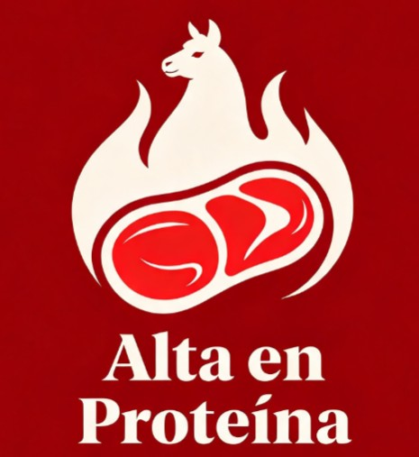
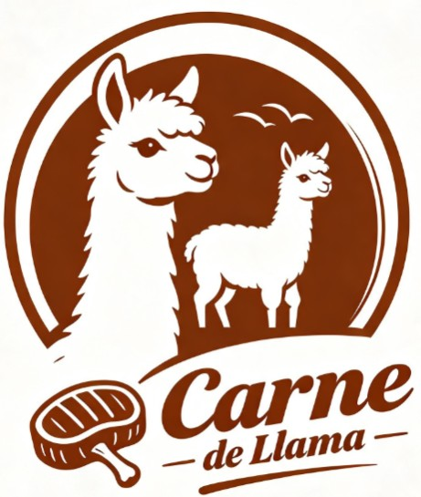

¿Por qué elegir SUMAKI?
Comprometidos con la excelencia nutricional y el desarrollo del altiplano boliviano.

Alta en proteínas
Carne andina de llama con un excepcional valor nutricional para tu salud diaria.

Baja en grasa
Productos 100% naturales, magros y altamente saludables para toda la familia.

Calidad garantizada
Procesados bajo estrictas normas de inocuidad y seguridad alimentaria.

Producción local
Apoyando directamente al crecimiento sostenible de productores en el altiplano.